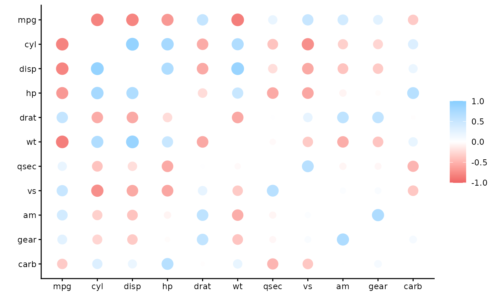
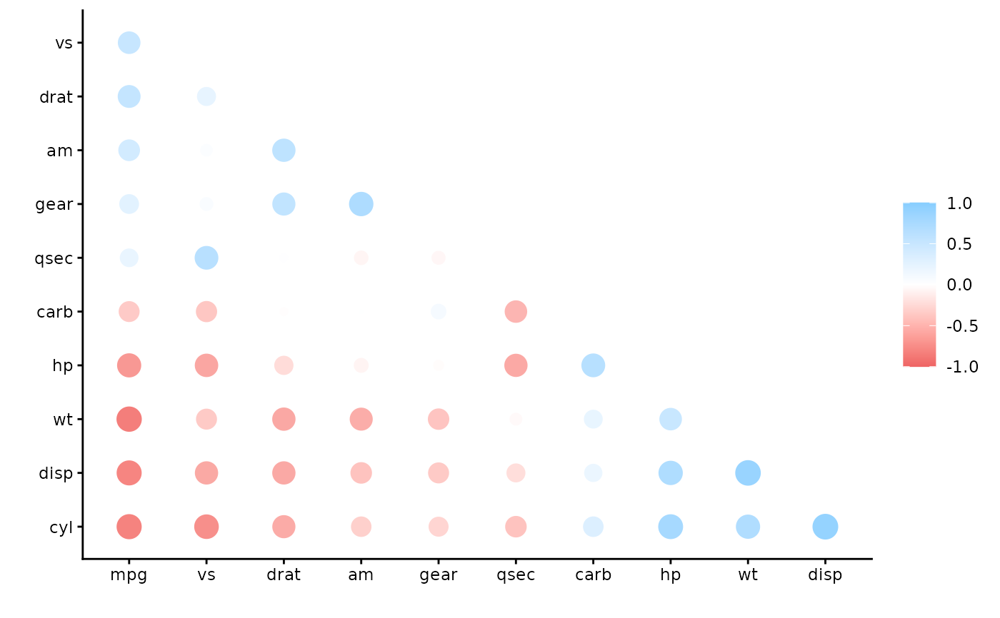
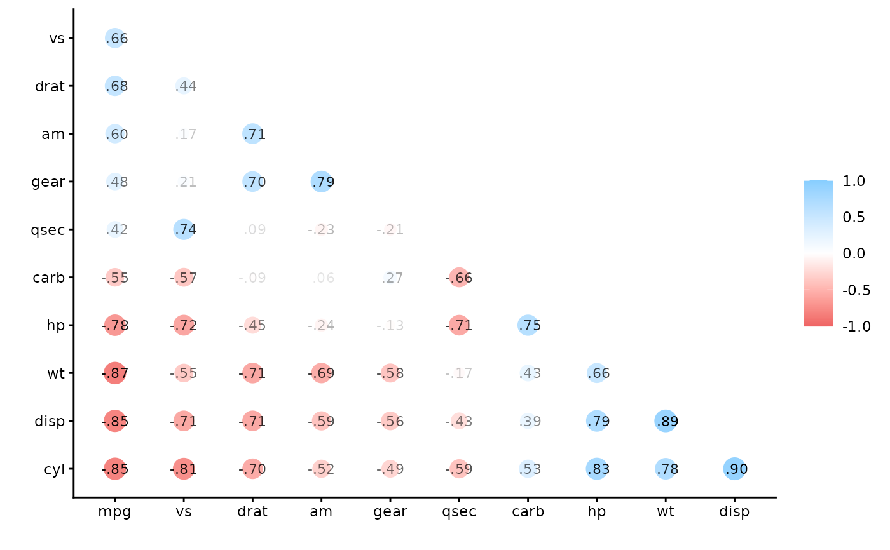
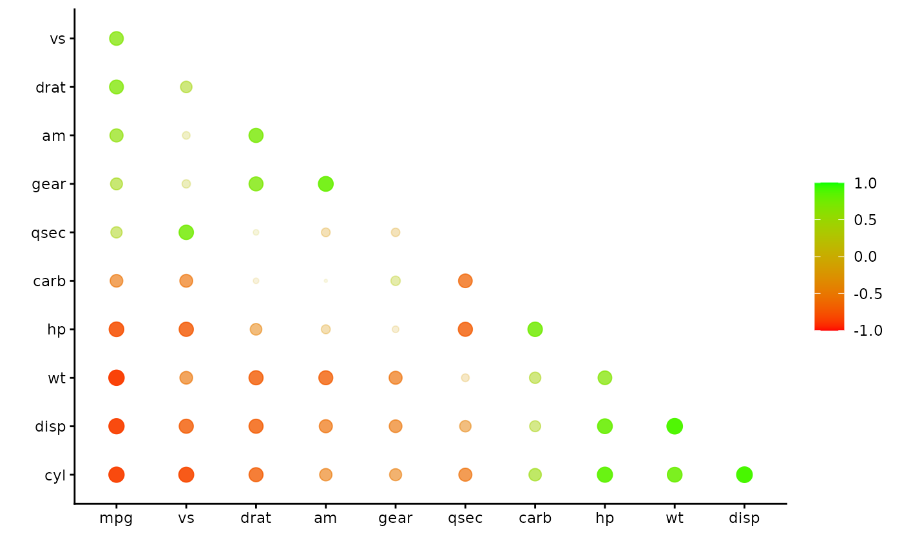

Plot a correlation data frame using ggplot2.
Arguments
- rdf
Correlation data frame (see
correlate) or object that can be coerced to one (seeas_cordf).- legend
Boolean indicating whether a legend mapping the colors to the correlations should be displayed.
- shape
geom_pointaesthetic.- colours, colors
Vector of colors to use for n-color gradient.
- print_cor
Boolean indicating whether the correlations should be printed over the shapes.
- .order
Either "default", meaning x and y variables keep the same order as the columns in
x, or "alphabet", meaning the variables are alphabetized.
Details
Each value in the correlation data frame is represented by one point/circle
in the output plot. The size of each point corresponds to the absolute value
of the correlation (via the size aesthetic). The color of each point
corresponds to the signed value of the correlation (via the color
aesthetic).
Examples
x <- correlate(mtcars)
#> Correlation computed with
#> • Method: 'pearson'
#> • Missing treated using: 'pairwise.complete.obs'
rplot(x)
#> Warning: `aes_string()` was deprecated in ggplot2 3.0.0.
#> ℹ Please use tidy evaluation idioms with `aes()`.
#> ℹ See also `vignette("ggplot2-in-packages")` for more information.
#> ℹ The deprecated feature was likely used in the corrr package.
#> Please report the issue at
#> <https://github.com/tidymodels/corrr/issues>.

# Common use is following rearrange and shave
x <- rearrange(x, absolute = FALSE)
x <- shave(x)
rplot(x)

rplot(x, print_cor = TRUE)

rplot(x, shape = 20, colors = c("red", "green"), legend = TRUE)
